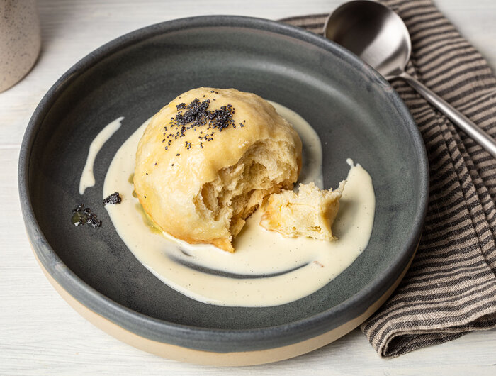

Dampfnudeln

Description
A 'Dampfnudel'(literal: steam noodle) is a typical dish of southern Germany. It is best served with Vanilla sauce and cranberry jam
Ingredients
For vanilla sauce
- ½ cup milk
- ½ cup heavy cream double cream
- 1 egg yolk
- 2 tablespoon sugar
- ½ vanilla pod
- ½ teaspoon cornstarch corn flour (if needed)
For dampfnudel (dumplings)
- ½ cup milk
- 2 tablespoon unsalted butter
- 1 ¾ cups all purpose flour plain flour
- 1 teaspoon instant dried yeast
- ¼ teaspoon salt
- 2 tablespoon sugar
- 1 egg
To cook dampfnudel
- 5 tablespoon milk (5tbsp is ¼ cup plus 1 tbsp)
- 1 tablespoon unsalted butter
- 1 tablespoon sugar
Instructions
To make vanilla sauce (can do ahead or while dough on 2nd rise - see step below)
- Put the milk, cream and sugar in a small pan and stir. Split open the half vanilla pod and scrape out the seeds into the cream mixture. Put the pod in as well and warn the mixture over a medium-low heat to bring the mixture almost to a simmer.
- Break up the egg yolk in a small bowl and mix in the cornstarch until smooth. Once the cream mixture is almost at a simmer, add a tablespoon of the warm cream to the egg yolk to temper it. Stir in then repeat another two times then tip all of the mixture back in to the cream.
- Continue to warm the cream gently without it boiling until it starts to thicken slightly. Remove from the heat and set aside. You can make this ahead and either warm or serve it cold. If made more than around 1 hour ahead, chill and store in the fridge (can make a day or two ahead).
To make dampfnudel
- Gently warm the milk and butter together either in a small pan or in the microwave just enough to melt the butter. If it is more than lukewarm, leave to cool slightly before using.
- Mix together the flour, yeast, salt and sugar in a bowl. Add the milk mixture and egg and mix everything so that it comes together as a ball of dough. Lightly flour a clean work surface and turn the dough out onto it.
- Gently knead the dough, adding a little extra flour if needed, for a couple minutes until it is smooth. Form it into a ball and place in a lightly oiled bowl. Cover and leave the dough to rise around an hour.
- Gently knock back the dough and divide the dough into four. Form each piece into a ball, by pinching in the sides then rounding in your hand (see photo above).
- Place the balls of dough, join side down, in a dish or on a baking sheet, cover and leave to rise again around another hour. Meanwhile make the vanilla sauce, if not made ahead (see above).
Cooking dampfnudel
- Once the dough has risen, warm the milk, butter and sugar for cooking the dampfnudel in a pan just a little larger than the four balls of dough over a medium-low heat.
- Once the sugar has dissolved, carefully lower the dumplings into the liquid so that they sit next to each other, flat on the bottom of the pan.
- Cover the pan and leave to steam over a low heat for around 20-25 minutes, checking there is still a little liquid towards the end to save them burning.
- Finish with a couple minutes without the lid on then serve, topped with the vanilla sauce and compote/jam, if using.
back to top of page
back to main page